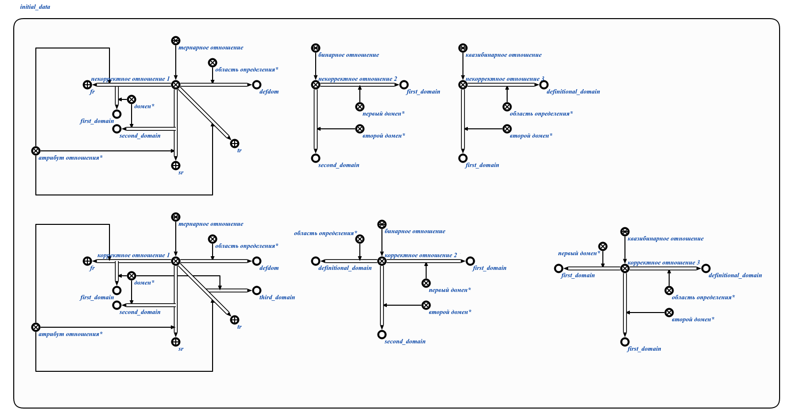
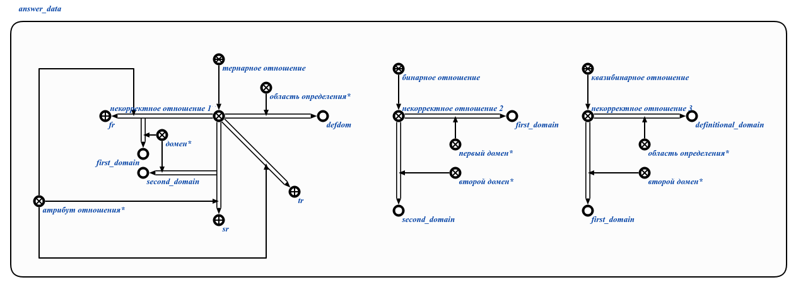

Команда пользовательского интерфейса для проверки указания доменов у отношений в рамках заданной структуры предназначена для проверки наличия у отношений доменов. Единственным аргументом является раздел базы знаний, в рамках которого анализируются отношения на предмет наличия у них всех доменов. Результатом выполнения команды является формирование структуры, содержащей отношения, в которых была обнаружена неполнота с позиции доменов отношения. Пример выполнения команды представлен ниже:

